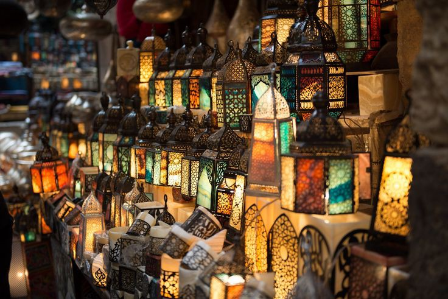

LE CAIRE
Le Caire est la capitale de l'Égypte.
Elle se situe au nord du pays avec une population d'environ dix millions d'habitants.
Elle est aussi la plus grande ville du pays et l'une des
plus peuplées du continent africain1.Il y'a plein de choses à y visiter telles que:
les pyramides de Gizeh
Situées sur le plateau de Gizeh, à 18 kilomètres du Caire, les pyramides sont les monuments les plus visités
d’Égypte, mais aussi les plus anciens du monde. Il s'agit de constructions funéraires, construites sous
les ordres de pharaons de différentes dynasties.
le musée du Caire
Localisé dans le centre, sur la place Tahrir, le Musée égyptien est un incontournable d'une visite au Caire.
Il fut construit pour accueillir et abriter les antiquités de l'Egypte antique. A l'intérieur se trouve la plus grande
et la plus précieuse collection au monde d'antiquités archéologiques de l'Egypte antique.
la tour du Caire
La tour du Caire a été construite entre 1956 et 1961 en béton armé dans
la fleur de lotus égyptien, et elle est située au cœur du Caire sur l'île de Zamalek dans
le Nil. C'est l'une des attractions touristiques les plus célèbres du Caire.
Sa hauteur est de 187 mètres
le bazar khan El Khalili

Construit à l’origine sur le site d’un ancien mausolée, les marchands locaux et
étrangers font du commerce au souk Khan el-Khalili depuis le 14ème siècle. C’est le
marché le plus célèbre d’Égypte. Il est situé dans le quartier d’Al-Hussein au Caire,
qui est l’un des quartiers de la ville.
la gastronomie egyptienne
Au caire on rencontre plusieurs specialités culinaires mais les plus courants sont le
foul mouddamas qui est à base de purée de fèves, accompagné de pain ainsi que les taameyas qui ressemblent
à des falafels composés de fèves et non de pois chiche.